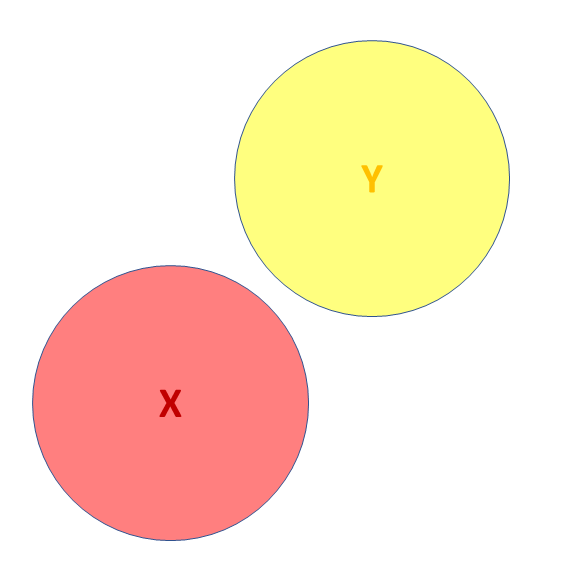
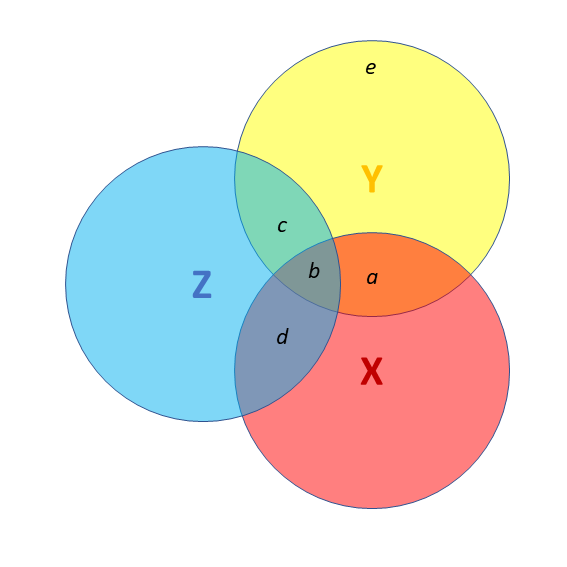

Introduction to the Linear Model
DPUK Spring Academy
2025-04-01
The Linear Model
Our model \(\hat{\textrm{f}}\textrm{itted}\) to some data:
\(\hat{y}_i = \color{blue}{\hat b_0 \cdot{} 1 + \hat b_1 \cdot{} x_i}\)
For the \(i^{th}\) observation:
- \(\color{red}{y_i}\) is the value we observe for \(x_i\)
- \(\hat{y}_i\) is the value the model predicts for \(x_i\)
- \(\color{red}{y_i} = \hat{y}_i + \hat\varepsilon_i\)

Null Hypothesis Testing

Null Hypothesis Testing

 Third variables
Third variables
 Third variables
Third variables
- X and Y are ‘orthogonal’ (perfectly uncorrelated)

 Third variables
Third variables
- X and Y are correlated.
- a = portion of Y’s variance shared with X
- e = portion of Y’s variance unrelated to X

 Third variables
Third variables
- X and Y are correlated.
- a = portion of Y’s variance shared with X
- e = portion of Y’s variance unrelated to X
- Z is also related to Y (c)
- Z is orthogonal to X (no overlap)
- relation between X and Y is unaffected (a)
- unexplained variance in Y (e) is reduced, so a:e ratio is greater.
Design is so important! If possible, we could design it so that X and Z are orthogonal (in the long run) by e.g., randomisation.
 Third variables
Third variables
- X and Y are correlated.
- Z is also related to Y (c + b)
- Z is related to X (b + d)
Association between X and Y is changed if we adjust for Z (a is smaller than previous slide), because there is a bit (b) that could be attributed to Z instead.
- multiple regression coefficients for X and Z are like areas a and c (scaled to be in terms of ‘per unit change in the predictor’)
- total variance explained by both X and Z is a+b+c

I have control issues..
..and so should you
what do we mean by “control”?
- often quite a vague/nebulous idea
relationship between x and y …
- controlling for z
- accounting for z
- conditional upon z
- holding constant z
- adjusting for z

Z is a collider

example

example 2

- to play around with this, see https://colliderbias.herokuapp.com/
example 2

- to play around with this, see https://colliderbias.herokuapp.com/
More than one predictor?
\(\color{red}{y} = \color{blue}{b_0 \cdot{} 1 + b_1 \cdot{} x_1 + \, ... \, + b_k \cdot x_k} + \varepsilon\)
mymodel <- lm(y ~ 1 + x1 + ... + xk, data = mydata)
tests of multiple parameters (2)
isolate the improvement in model fit due to inclusion of additional parameters
m1 <- lm(y ~ 1 + x, data = df)
m2 <- lm(y ~ 1 + z + z2 + x, data = df)
anova(m1, m2)Analysis of Variance Table
Model 1: y ~ 1 + x
Model 2: y ~ 1 + z + z2 + x
Res.Df RSS Df Sum of Sq F Pr(>F)
1 98 1141
2 96 357 2 785 106 <2e-16 ***
---
Signif. codes: 0 '***' 0.001 '**' 0.01 '*' 0.05 '.' 0.1 ' ' 1
Think in hypotheticals
mod = lm(stress ~ age, data = df)
summary(mod)Coefficients:
Estimate Std. Error t value Pr(>|t|)
(Intercept) -3.8755 2.3911 -1.62 0.1437
age 0.2187 0.0633 3.46 0.0086 **
---
Signif. codes: 0 '***' 0.001 '**' 0.01 '*' 0.05 '.' 0.1 ' ' 1
Residual standard error: 3.08 on 8 degrees of freedom
Multiple R-squared: 0.599, Adjusted R-squared: 0.549
F-statistic: 11.9 on 1 and 8 DF, p-value: 0.00862
Think in hypotheticals
mod = lm(stress ~ age, data = df)
summary(mod)Coefficients:
Estimate Std. Error t value Pr(>|t|)
(Intercept) -3.8755 2.3911 -1.62 0.1437
age 0.2187 0.0633 3.46 0.0086 **
---
Signif. codes: 0 '***' 0.001 '**' 0.01 '*' 0.05 '.' 0.1 ' ' 1
Residual standard error: 3.08 on 8 degrees of freedom
Multiple R-squared: 0.599, Adjusted R-squared: 0.549
F-statistic: 11.9 on 1 and 8 DF, p-value: 0.00862
Think in hypotheticals
mod = lm(stress ~ age, data = df)
summary(mod)Coefficients:
Estimate Std. Error t value Pr(>|t|)
(Intercept) -3.8755 2.3911 -1.62 0.1437
age 0.2187 0.0633 3.46 0.0086 **
---
Signif. codes: 0 '***' 0.001 '**' 0.01 '*' 0.05 '.' 0.1 ' ' 1
Residual standard error: 3.08 on 8 degrees of freedom
Multiple R-squared: 0.599, Adjusted R-squared: 0.549
F-statistic: 11.9 on 1 and 8 DF, p-value: 0.00862
Think in hypotheticals
mod = lm(stress ~ therapy, data = df)
summary(mod)Coefficients:
Estimate Std. Error t value Pr(>|t|)
(Intercept) 5.45 1.99 2.75 0.025 *
therapy -3.57 2.81 -1.27 0.240
---
Signif. codes: 0 '***' 0.001 '**' 0.01 '*' 0.05 '.' 0.1 ' ' 1
Residual standard error: 4.44 on 8 degrees of freedom
Multiple R-squared: 0.168, Adjusted R-squared: 0.0637
F-statistic: 1.61 on 1 and 8 DF, p-value: 0.24
Think in hypotheticals
mod = lm(stress ~ age + exercise + therapy, data = df)
summary(mod)Coefficients:
Estimate Std. Error t value Pr(>|t|)
(Intercept) 3.0874 3.1338 0.99 0.36259
age 0.2412 0.0334 7.22 0.00036 ***
exercise -0.9082 0.4817 -1.89 0.10836
therapy -6.9398 1.6246 -4.27 0.00525 **
---
Signif. codes: 0 '***' 0.001 '**' 0.01 '*' 0.05 '.' 0.1 ' ' 1
Residual standard error: 1.61 on 6 degrees of freedom
Multiple R-squared: 0.918, Adjusted R-squared: 0.877
F-statistic: 22.3 on 3 and 6 DF, p-value: 0.00118
Think in hypotheticals
mod = lm(stress ~ age + exercise + therapy, data = df)
summary(mod)Coefficients:
Estimate Std. Error t value Pr(>|t|)
(Intercept) 3.0874 3.1338 0.99 0.36259
age 0.2412 0.0334 7.22 0.00036 ***
exercise -0.9082 0.4817 -1.89 0.10836
therapy -6.9398 1.6246 -4.27 0.00525 **
---
Signif. codes: 0 '***' 0.001 '**' 0.01 '*' 0.05 '.' 0.1 ' ' 1
Residual standard error: 1.61 on 6 degrees of freedom
Multiple R-squared: 0.918, Adjusted R-squared: 0.877
F-statistic: 22.3 on 3 and 6 DF, p-value: 0.00118
example - multiple levels
lm(mass_brain ~ species, data = braindata) |>
summary()
Call:
lm(formula = mass_brain ~ species, data = braindata)
Residuals:
Min 1Q Median 3Q Max
-0.30010 -0.06254 0.00129 0.04779 0.18664
Coefficients:
Estimate Std. Error t value Pr(>|t|)
(Intercept) 0.6027 0.0275 21.94 < 2e-16 ***
speciesPotar monkey -0.3574 0.0414 -8.63 7.4e-10 ***
speciesRhesus monkey -0.1526 0.0426 -3.59 0.0011 **
---
Signif. codes: 0 '***' 0.001 '**' 0.01 '*' 0.05 '.' 0.1 ' ' 1
Residual standard error: 0.103 on 32 degrees of freedom
Multiple R-squared: 0.699, Adjusted R-squared: 0.681
F-statistic: 37.2 on 2 and 32 DF, p-value: 4.45e-09